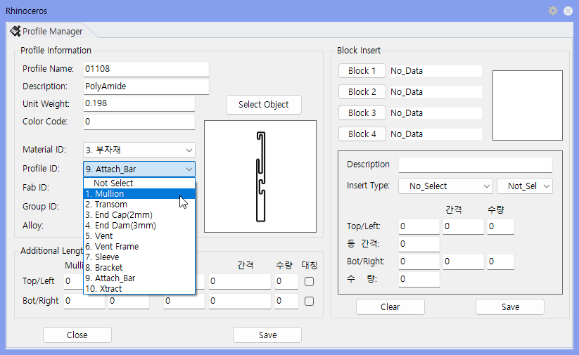

MakeM — Mullion 데이터 작성
MakeM
선택한 Surface를 Profile_ID = 1 으로 교체하는 명령어 입니다.
사용 방법
Rhino 명령창에
MakeM
을 입력하고 Enter를 누릅니다.
Mullion 데이터를 만들 Section 객체를 선택합니다.
생성 또는 갱신된 데이터를 확인합니다.
실행 예시

실행 결과
항목
설명
생성 데이터
Mullion 관련 Section 데이터가 작성됩니다.
사용 목적
Frame/Mullion 모델링 전 필요한 Section 정보를 준비합니다.
관련 명령어
명령어
설명
Pname
Section Profile 이름과 속성 입력
SSP
작성된 Section Profile 그룹 선택
SSC
Section 선택 상태 초기화